6.链接列表¶
链接列表是一个以线性、单向顺序排列的数值集合。与Swift Array等连续存储方式相比，链接列表在理论上有一些优势。
- 恒定时间插入和从列表前移出。
- 可靠的性能特点。
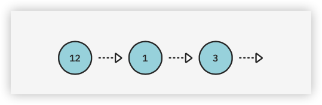
如图所示，一个链式列表是一个nodes链。节点有两个责任：
- 持有一个值。
- 持有对下一个节点的引用。一个
nil值代表列表的结束。
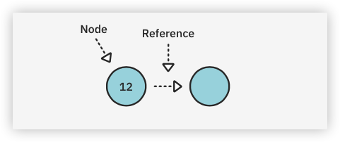
在本章中，你将实现一个链表，并学习与之相关的常见操作。你将了解每个操作的时间复杂性，并实现一个整洁的Swift小功能，即写时复制。
打开本章的入门游戏，你可以直接进入代码。
Node¶
在Sources目录下创建一个新的Swift文件，命名为Node.swift。在该文件中添加以下内容：
public class Node<Value> {
public var value: Value
public var next: Node?
public init(value: Value, next: Node? = nil) {
self.value = value
self.next = next
}
}
extension Node: CustomStringConvertible {
public var description: String {
guard let next = next else {
return "\(value)"
}
return "\(value) -> " + String(describing: next) + " "
}
}
导航到Playground页面并添加以下内容：
example(of: "creating and linking nodes") {
let node1 = Node(value: 1)
let node2 = Node(value: 2)
let node3 = Node(value: 3)
node1.next = node2
node2.next = node3
print(node1)
}
你刚刚创建了三个节点并将它们连接起来：
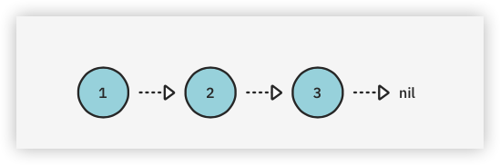
在控制台，你应该看到以下输出：
---Example of creating and linking nodes---
1 -> 2 -> 3
就实用性而言，目前建立名单的方法还有很多需要改进的地方。你可以很容易地看到，用这种方法建立长的列表是不切实际的。缓解这个问题的一个常用方法是建立一个管理Node对象的LinkedList。你要做的就是这个!
LinkedList¶
在Sources目录下创建一个新文件，命名为LinkedList.swift。在该文件中加入以下内容：
public struct LinkedList<Value> {
public var head: Node<Value>?
public var tail: Node<Value>?
public init() {}
public var isEmpty: Bool {
head == nil
}
}
extension LinkedList: CustomStringConvertible {
public var description: String {
guard let head = head else {
return "Empty list"
}
return String(describing: head)
}
}
链接列表有一个head和tail的概念，分别指的是列表的第一个和最后一个节点：
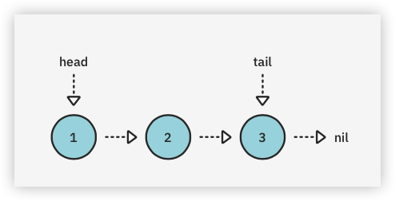
向列表中添加值¶
如前所述，你要提供一个接口来管理Node对象。你首先要处理好添加值的问题。有三种方法可以向一个链接列表添加值，每一种都有独特的性能特点：
push：在列表的前面添加一个值。append：在列表的最后添加一个值。insert(after:)：在一个特定的列表节点后添加一个值。
你将在下一节中实现这些功能，并分析它们的性能特点。
push操作¶
在列表的前面添加一个值被称为push操作。这也被称为head-first insertion。它的代码是非常简单的。
在LinkedList中添加以下方法：
public mutating func push(_ value: Value) {
head = Node(value: value, next: head)
if tail == nil {
tail = head
}
}
如果你推送到一个空列表中，新节点既是列表的head，也是tail。
在Playground页面中，添加以下内容：
example(of: "push") {
var list = LinkedList<Int>()
list.push(3)
list.push(2)
list.push(1)
print(list)
}
你的控制台输出应该显示这个：
---Example of push---
1 -> 2 -> 3
附加操作¶
你要看的下一个操作是append。这是在列表的末尾添加一个值，被称为tail-end insertion。
在LinkedList.swift中，在push下面添加以下代码：
public mutating func append(_ value: Value) {
// 1
guard !isEmpty else {
push(value)
return
}
// 2
tail!.next = Node(value: value)
// 3
tail = tail!.next
}
这段代码相对简单：
- 像以前一样，如果列表是空的，你需要将
head和tail更新为新的节点。由于append在空列表上的功能与push相同，所以你调用push为你做这些工作。 - 在所有其他情况下，你在
tail节点之后创建一个新节点。由于你在isEmpty情况下用上面的guard语句推送，强制解包保证成功。 - 由于这是尾部插入，你的新节点也是列表的尾部。
跃进到Playground上，在底部写下以下内容：
example(of: "append") {
var list = LinkedList<Int>()
list.append(1)
list.append(2)
list.append(3)
print(list)
}
你应该在控制台看到以下输出：
---Example of append---
1 -> 2 -> 3
insert(after:)操作¶
第三个也是最后一个添加值的操作是insert(after:)。这个操作在列表中的一个特定位置插入一个值，需要两个步骤：
- 找到列表中的一个特定节点。
- 插入新的节点。
首先，你要实现代码，找到你想插入值的节点。
在LinkedList.swift中，在append下面添加以下代码：
public func node(at index: Int) -> Node<Value>? {
// 1
var currentNode = head
var currentIndex = 0
// 2
while currentNode != nil && currentIndex < index {
currentNode = currentNode!.next
currentIndex += 1
}
return currentNode
}
node(at:)将尝试根据给定的索引来检索列表中的一个节点。由于你只能从头部节点访问列表中的节点，你必须进行迭代遍历。下面是具体的操作过程。
- 你创建一个对
head的新引用，并跟踪当前的遍历次数。 - 使用
while循环，将引用向下移动到列表中，直到达到所需的索引。空的列表或越界的索引将导致一个nil的返回值。
现在你需要插入新的节点。
在node(at:)下面添加以下方法：
// 1
@discardableResult
public mutating func insert(_ value: Value,
after node: Node<Value>)
-> Node<Value> {
// 2
guard tail !== node else {
append(value)
return tail!
}
// 3
node.next = Node(value: value, next: node.next)
return node.next!
}
以下是你所做的事情：
@discardableResult让调用者忽略这个方法的返回值，而不会让编译器上蹿下跳地警告你。- 在这个方法与
tail节点一起被调用的情况下，你将调用功能等同的append方法。这将负责更新tail。 - 否则，你只需将新节点与列表的其他部分连接起来，并返回新节点。
跳回Playground页面来测试一下。在Playground的底部添加以下内容：
example(of: "inserting at a particular index") {
var list = LinkedList<Int>()
list.push(3)
list.push(2)
list.push(1)
print("Before inserting: \(list)")
var middleNode = list.node(at: 1)!
for _ in 1...4 {
middleNode = list.insert(-1, after: middleNode)
}
print("After inserting: \(list)")
}
你应该看到以下输出：
---Example of inserting at a particular index---
Before inserting: 1 -> 2 -> 3
After inserting: 1 -> 2 -> -1 -> -1 -> -1 -> -1 -> 3
性能分析¶
呜呼! 到目前为止，你已经取得了不错的进展。回顾一下，你已经实现了三个向链表加值的操作，以及一个在特定索引处寻找节点的方法。
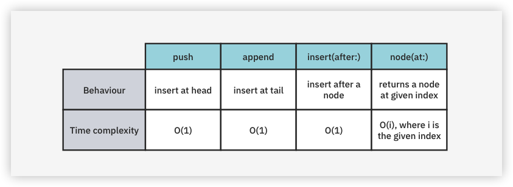
接下来，你将专注于相反的动作：移除操作。
从列表中删除数值¶
有三种主要的删除节点的操作：
pop: 删除列表前面的值。removeLast：删除列表末尾的值。remove(at:)：删除列表中的任何一个值。
你将实现这三种方法并分析其性能特点。
pop操作¶
删除列表前面的一个值通常被称为pop。这个操作几乎和push一样简单，所以直接潜入其中。
给LinkedList添加以下方法：
@discardableResult
public mutating func pop() -> Value? {
defer {
head = head?.next
if isEmpty {
tail = nil
}
}
return head?.value
}
pop返回从列表中删除的值。这个值是可选的，因为列表可能是空的。
通过将head向下移动，你已经有效地删除了列表的第一个节点。一旦方法结束，ARC将从内存中删除旧的节点，因为不会有更多的引用被附加到它上面。如果列表变空了，你就把tail设为nil。
回到Playground页面内，在底部添加以下代码来测试它：
example(of: "pop") {
var list = LinkedList<Int>()
list.push(3)
list.push(2)
list.push(1)
print("Before popping list: \(list)")
let poppedValue = list.pop()
print("After popping list: \(list)")
print("Popped value: " + String(describing: poppedValue))
}
你应该看到以下输出：
---Example of pop---
Before popping list: 1 -> 2 -> 3
After popping list: 2 -> 3
Popped value: Optional(1)
removeLast操作¶
删除列表中的最后一个节点有些不方便。虽然你有一个对tail节点的引用，但如果没有对它之前的节点的引用，你就不能把它砍掉。因此，你必须做一个艰巨的遍历。在pop下面添加以下代码：
@discardableResult
public mutating func removeLast() -> Value? {
// 1
guard let head = head else {
return nil
}
// 2
guard head.next != nil else {
return pop()
}
// 3
var prev = head
var current = head
while let next = current.next {
prev = current
current = next
}
// 4
prev.next = nil
tail = prev
return current.value
}
以下是代码中发生的情况：
- 如果
head是nil，就没有什么可删除的，所以你返回nil。 - 如果列表中只有一个节点，
removeLast在功能上等同于pop。因为pop将处理更新head和tail的引用，你只需要把这项工作委托给它。 - 你继续搜索下一个节点，直到
current.next为nil。这意味着current是列表的最后一个节点。 - 由于
current是最后一个节点，你只需使用prev.next引用断开它的连接。你也要确保更新tail引用。
回到Playground页面，在底部添加以下内容：
example(of: "removing the last node") {
var list = LinkedList<Int>()
list.push(3)
list.push(2)
list.push(1)
print("Before removing last node: \(list)")
let removedValue = list.removeLast()
print("After removing last node: \(list)")
print("Removed value: " + String(describing: removedValue))
}
你应该在控制台的底部看到以下内容：
---Example of removing the last node---
Before removing last node: 1 -> 2 -> 3
After removing last node: 1 -> 2
Removed value: Optional(3)
removeLast要求你在列表中一路向下追踪。这就使得一个O(n)的操作，相对昂贵。
remove(after:)操作¶
最后的移除操作是在列表中的某一点移除一个特定的节点。这和insert(after:)的实现很相似；你首先要找到你想删除的节点之前的节点，然后解除它的链接。
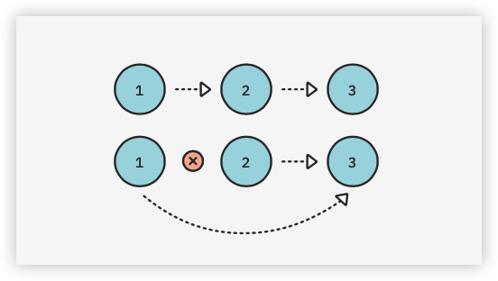
回到LinkedList.swift并在removeLast下面添加以下方法：
@discardableResult
public mutating func remove(after node: Node<Value>) -> Value? {
defer {
if node.next === tail {
tail = node
}
node.next = node.next?.next
}
return node.next?.value
}
节点的解除链接发生在defer块中。如果被移除的节点是尾部节点，需要特别注意，因为tail引用必须被更新。
回到Playground上试试吧。你知道该怎么做：
example(of: "removing a node after a particular node") {
var list = LinkedList<Int>()
list.push(3)
list.push(2)
list.push(1)
print("Before removing at particular index: \(list)")
let index = 1
let node = list.node(at: index - 1)!
let removedValue = list.remove(after: node)
print("After removing at index \(index): \(list)")
print("Removed value: " + String(describing: removedValue))
}
你应该在控制台看到以下输出：
---Example of removing a node after a particular node---
Before removing at particular index: 1 -> 2 -> 3
After removing at index 1: 1 -> 3
Removed value: Optional(2)
试着添加更多的元素，玩玩索引的值。与insert(at:)类似，这个操作的时间复杂度是O(1)，但它要求你事先有一个对特定节点的引用。
性能分析¶
你又遇到了一个检查点! 回顾一下，你已经实现了从链表中移除数值的三个操作：
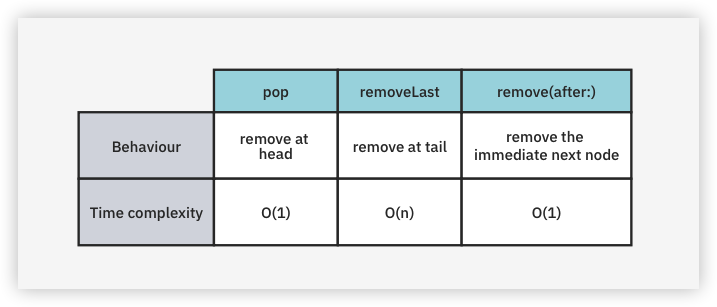
在这一点上，你已经定义了一个世界上大多数程序员都能理解的链接列表的接口。然而，还有一些工作要做，以装饰Swift的语义。在本章的下半部分，你将专注于使接口尽可能地Swifty。
Swift集合协议¶
Swift标准库有一套协议，帮助定义对一个特定类型的期望。这些协议中的每一个都对特性和性能提供了某些保证。从这套协议中，你将专注于四个与集合相关的协议。
下面是对每个协议作用的快速总结：
第1层，序列：一个序列类型提供对其元素的顺序访问。它有一个重要的注意事项：使用顺序访问可能会破坏性地消耗元素，这样你就不能再访问它们了。第2层，集合：一个集合类型是一个提供额外保证的序列类型。一个集合类型是有限的，允许重复的非破坏性的顺序访问。第3层，双向集合：一个集合类型可以是一个双向的集合类型，如果它，如其名，可以允许在序列上和序列下的双向旅行。这对链表来说是不可能的，因为你只能从头到尾，而不能反过来。第4层，随机访问集合：一个双向集合类型可以是随机访问集合类型，如果它能保证访问一个特定索引的元素和访问任何其他索引的元素一样长。这对于链接列表来说是不可能的，因为访问列表前面的节点要比访问列表后面的节点快得多。
每一种都有更多的东西可以说。当你为它们写符合性时，你会了解到更多的信息。
链表可以从Swift集合协议中获得两个资格。首先，由于链表是一个节点链，采用Sequence协议是合理的。第二，因为节点链是一个无限的序列，所以采用Collection协议是有意义的。
成为一个Swift集合¶
在本节中，你将研究实现Collection协议。集合类型是一个有限的序列，并提供非破坏性的顺序访问。Swift Collection还允许通过subscript进行访问，这是一个花哨的术语，表示一个索引可以映射到集合中的一个值。
下面是一个使用Swift Array的下标的例子：
array[5]
数组的索引是一个Int值--在这个例子中的值是5。下标操作是用方括号定义的。使用带有索引的下标将从集合中返回一个值。
自定义集合索引¶
Collection协议方法性能的一个决定性指标是将一个Index映射到一个值的速度。不像其他存储选项，如Swift Array，链接列表不能使用整数索引实现O(1)下标操作。因此，你的目标是定义一个自定义索引，包含对其各自节点的引用。
在LinkedList.swift中，添加以下扩展：
extension LinkedList: Collection {
public struct Index: Comparable {
public var node: Node<Value>?
static public func ==(lhs: Index, rhs: Index) -> Bool {
switch (lhs.node, rhs.node) {
case let (left?, right?):
return left.next === right.next
case (nil, nil):
return true
default:
return false
}
}
static public func <(lhs: Index, rhs: Index) -> Bool {
guard lhs != rhs else {
return false
}
let nodes = sequence(first: lhs.node) { $0?.next }
return nodes.contains { $0 === rhs.node }
}
}
}
你将使用这个自定义索引来完成Collection的要求。在扩展中写下以下内容来完成它：
// 1
public var startIndex: Index {
Index(node: head)
}
// 2
public var endIndex: Index {
Index(node: tail?.next)
}
// 3
public func index(after i: Index) -> Index {
Index(node: i.node?.next)
}
// 4
public subscript(position: Index) -> Value {
position.node!.value
}
startIndex是由链表的head合理定义的。Collection将endIndex定义为最后一个可访问值之后的索引，所以你给它tail?.next。index(after:)规定了索引的递增方式。你只需给它一个紧接着下一个节点的索引。subscript用于将Index映射到集合中的值。由于你已经创建了自定义的索引，你可以通过引用节点的值在恒定时间内轻松实现。
这就结束了采用Collection的程序。导航回Playground页面，并进行试运行：
example(of: "using collection") {
var list = LinkedList<Int>()
for i in 0...9 {
list.append(i)
}
print("List: \(list)")
print("First element: \(list[list.startIndex])")
print("Array containing first 3 elements: \(Array(list.prefix(3)))")
print("Array containing last 3 elements: \(Array(list.suffix(3)))")
let sum = list.reduce(0, +)
print("Sum of all values: \(sum)")
}
你应该看到以下输出：
---Example of using collection---
List: 0 -> 1 -> 2 -> 3 -> 4 -> 5 -> 6 -> 7 -> 8 -> 9
First element: 0
Array containing first 3 elements: [0, 1, 2]
Array containing last 3 elements: [7, 8, 9]
Sum of all values: 45
值语义和写时复制¶
Swift集合的另一个重要特征是它有价值语义。这可以通过写时复制(copy-on-write)有效地实现，在此称为COW。为了说明值语义的概念，你将使用数组来探索这一行为。
在Playground页面的底部写下以下内容：
example(of: "array cow") {
let array1 = [1, 2]
var array2 = array1
print("array1: \(array1)")
print("array2: \(array2)")
print("---After adding 3 to array 2---")
array2.append(3)
print("array1: \(array1)")
print("array2: \(array2)")
}
你应该看到以下输出：
---Example of array cow---
array1: [1, 2]
array2: [1, 2]
---After adding 3 to array 2---
array1: [1, 2]
array2: [1, 2, 3]
当array2被修改时，array1的元素不会被改变。当调用append时，array2会对底层存储进行复制：
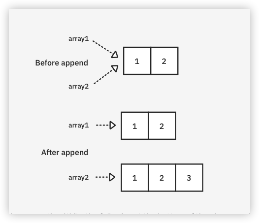
现在，检查你的链表是否有价值语义。在Playground页面的底部写下以下内容：
example(of: "linked list cow") {
var list1 = LinkedList<Int>()
list1.append(1)
list1.append(2)
var list2 = list1
print("List1: \(list1)")
print("List2: \(list2)")
print("After appending 3 to list2")
list2.append(3)
print("List1: \(list1)")
print("List2: \(list2)")
}
You should see the following output:
---Example of linked list cow---
List1: 1 -> 2
List2: 1 -> 2
After appending 3 to list2
List1: 1 -> 2 -> 3
List2: 1 -> 2 -> 3
不幸的是，你的链接列表没有值的语义！这是因为你的底层存储使用了引用类型（Node）。这是因为你的底层存储使用了一个引用类型（Node）。这是一个严重的问题，因为 LinkedList是一个结构，应该使用值语义。实现COW将解决这个问题。
用COW实现值语义的策略是相当直接的。在突变链接列表的内容之前，你要对底层存储进行拷贝，并将所有引用（head和tail）更新到新的拷贝上。
在LinkedList.swift中，为LinkedList添加以下方法：
private mutating func copyNodes() {
guard var oldNode = head else {
return
}
head = Node(value: oldNode.value)
var newNode = head
while let nextOldNode = oldNode.next {
newNode!.next = Node(value: nextOldNode.value)
newNode = newNode!.next
oldNode = nextOldNode
}
tail = newNode
}
这个方法将用新分配的相同值的节点替换你的链接列表的现有节点。
现在在LinkedList中找到所有其他标有mutating关键字的方法，并在每个方法的顶部调用copyNodes。
一共有六个方法：
pushappendinsert(after:)popremoveLastremove(after:)
在你完成改造后，最后的example函数调用应该产生以下输出：
---Example of linked list cow---
List1: 1 -> 2
List2: 1 -> 2
After appending 3 to list2
List1: 1 -> 2
List2: 1 -> 2 -> 3
这就是你想要的! 好吧，除了在每个变异调用中引入一个O(n)的开销之外...
优化COW¶
每次变异调用的O(n)开销是不可接受的。有两个策略有助于缓解这个问题。第一个是当节点只有一个所有者时避免复制。
isKnownUniquelyReferenced¶
在Swift标准库中，有一个名为isKnownUniquelyReferenced的函数。这个函数可以用来确定一个对象是否正好有一个引用。在链接列表COW的例子中测试一下。
在最后的example函数调用中，找到写有var list2 = list1的那一行，将其更新为以下内容：
print("List1 uniquely referenced: \(isKnownUniquelyReferenced(&list1.head))")
var list2 = list1
print("List1 uniquely referenced: \(isKnownUniquelyReferenced(&list1.head))")
你应该在控制台中看到两行新字：
List1 uniquely referenced: true
List1 uniquely referenced: false
使用isKnownUniquelyReferenced，你可以检查底层节点对象是否是共享的! 既然你已经验证了这一行为，那就删除两个print语句。你的路径就清楚了。在copyNodes的顶部添加以下条件：
guard !isKnownUniquelyReferenced(&head) else {
return
}
你可以高兴地看到，COW仍然非常有效：
---Example of linked list cow---
List1: 1 -> 2
List2: 1 -> 2
After appending 3 to list2
List1: 1 -> 2
List2: 1 -> 2 -> 3
有了这个变化，你的链接列表的性能将恢复到以前的性能，并获得COW的好处。
一个小的困境¶
在你之前的示例代码中加入以下代码：
print("Removing middle node on list2")
if let node = list2.node(at: 0) {
list2.remove(after: node)
}
print("List2: \(list2)")
你应该看到以下控制台输出：
---Example of linked list cow---
List1: 1 -> 2
List2: 1 -> 2
After appending 3 to list2
List1: 1 -> 2
List2: 1 -> 2 -> 3
Removing middle node on list2
List2: 1 -> 2 -> 3
移除操作不再起作用了。其原因在于我们所做的CoW优化。因为每次突变都会触发节点的拷贝，remove(after:)的实现是对错误的节点集进行移除。为了纠正这个问题，你要写一个专门的copyNodes方法。回到你的Sources目录下的LinkedList.swift，在copyNodes方法下面写上以下内容：
private mutating func copyNodes(returningCopyOf node: Node<Value>?) -> Node<Value>? {
guard !isKnownUniquelyReferenced(&head) else {
return nil
}
guard var oldNode = head else {
return nil
}
head = Node(value: oldNode.value)
var newNode = head
var nodeCopy: Node<Value>?
while let nextOldNode = oldNode.next {
if oldNode === node {
nodeCopy = newNode
}
newNode!.next = Node(value: nextOldNode.value)
newNode = newNode!.next
oldNode = nextOldNode
}
return nodeCopy
}
这个方法与之前的实现有很多相似之处。主要的区别是，它将根据传入的参数返回新复制的节点。将remove(after:)方法更新为以下内容：
@discardableResult
public mutating func remove(after node: Node<Value>) -> Value? {
guard let node = copyNodes(returningCopyOf: node) else { return nil }
defer {
if node.next === tail {
tail = node
}
node.next = node.next?.next
}
return node.next?.value
}
你现在使用你刚刚创建的方法，对新复制的节点进行删除。
共享节点¶
第二个优化是部分共享的节点。事实证明，在某些情况下，你可以避免复制。对所有情况的全面评估超出了本书的范围，但这将使你对其中的内容有一个概念。
看一下下面的例子（不需要写下来）：
var list1 = LinkedList<Int>()
(1...3).forEach { list1.append($0) }
var list2 = list1
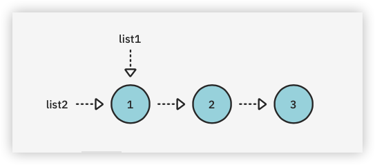
现在考虑对list2做推送操作的后果，cow为disabled：
list2.push(0)
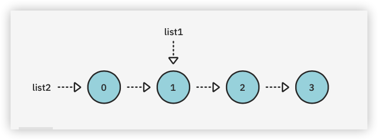
list1被list2的push操作影响吗？在这种情况下不会! 如果你要打印这两个列表，你会得到以下输出：
List1: 1 -> 2 -> 3
List2: 0 -> 1 -> 2 -> 3
在这种情况下，向list1推送100的结果也是安全的。
list1.push(100)
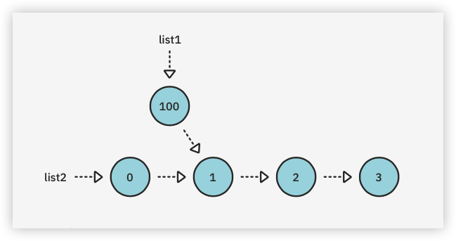
如果你现在打印这两个列表，你会得到以下输出：
List1: 100 -> 1 -> 2 -> 3
List2: 0 -> 1 -> 2 -> 3
链表的单向性意味着头先插入可以忽略"COW税"!
关键点¶
- 链接列表是线性和单向的。只要你把一个引用从一个节点移到另一个节点，你就不能再回去了。
- 链接列表的时间复杂度是
O(1)，即先插入。数组的时间复杂度为O(n)，即从头开始插入。 - 符合
Swift的集合协议，如Sequence和Collection，会自动让你获得许多有用的方法。 Copy-on-write行为让你实现价值语义，同时保持良好的性能。